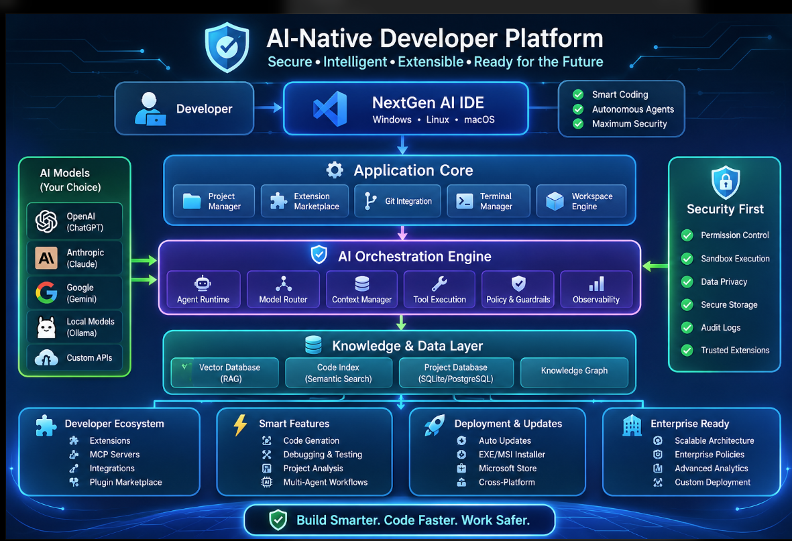

Most AI coding tools tie you to one model, send your code wherever they like, and give you very little control. I wanted the opposite: a platform where the organisation decides which model sees what, where agents can explore freely but cannot change anything without approval, and where the whole thing can be audited.
The AI-Native Developer Platform grew out of a "NextGen AI IDE" architecture I sketched earlier this year. The first public version went up on GitHub on 13 November 2026 and is tagged v0.2.0.

Principles
- Any model, one API. OpenAI, Anthropic Claude, Google Gemini, local Ollama models or your own gateway, with per-task routing, retry and fallback.
- Your data stays yours. Prompts that contain card numbers, phone numbers, keys or other sensitive data stay on the local model automatically, and secrets are masked before anything leaves the machine.
- Agents that are safe to run. Agents can read, search and analyse code on their own. Writing files and running commands always require approval, and budgets stop runaway loops and costs.
- Understands the code base. Semantic search, a symbol index (TypeScript, Java, Python and IBM i RPG) and a knowledge graph that answers "what breaks if I change this?".
- Enterprise-ready. Layered policies, a tamper-evident audit log, an encrypted key vault, signed extensions, cost reports and an air-gapped mode.
- Zero runtime dependencies. The shared library exists in TypeScript, Java and Python and uses only each language's standard library.
Try it
You need Node.js 22+ and git: clone the repository, run npm install and npm test, then npm start -- /path/to/project to open the interactive AI shell. With no API key it falls back to a local Ollama model, or to an offline echo model, so you can explore every feature first.
Skills applied
TypeScript, Java 17, Python, LLM routing (OpenAI, Claude, Gemini, Ollama), agent design, MCP, code indexing (incl. IBM i RPG), security & audit controls, CI/CD, npm & JitPack publishing
Release history
- v0.2.0 · 13 November 2026
First public version on GitHub; CI, npm package and JitPack build.